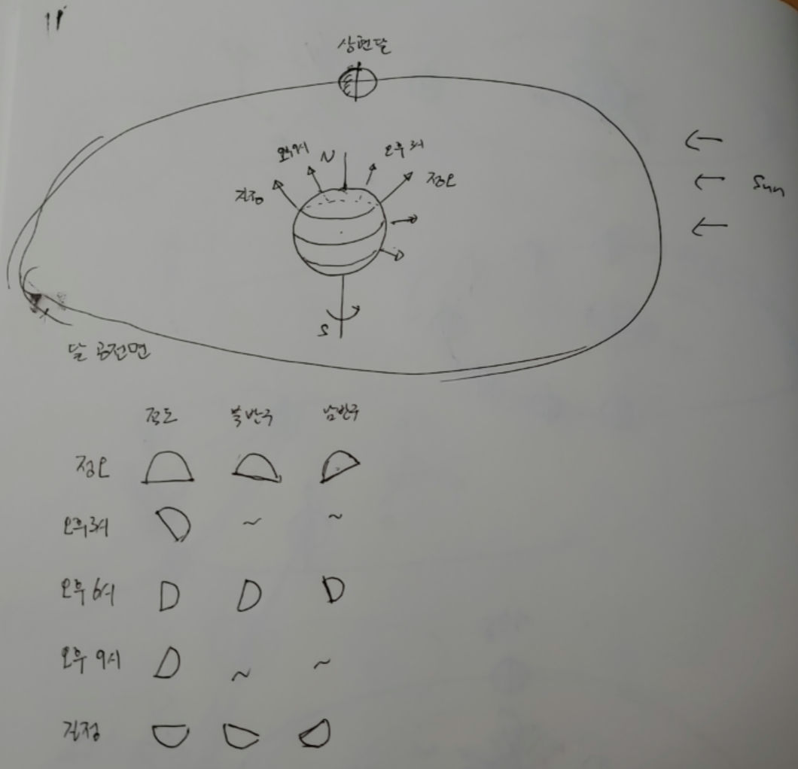
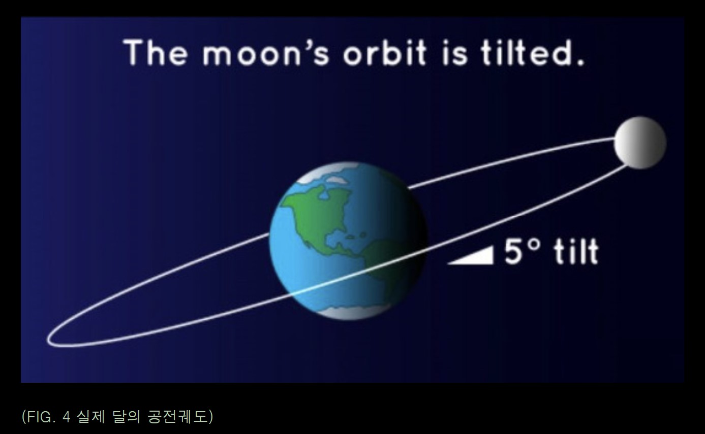
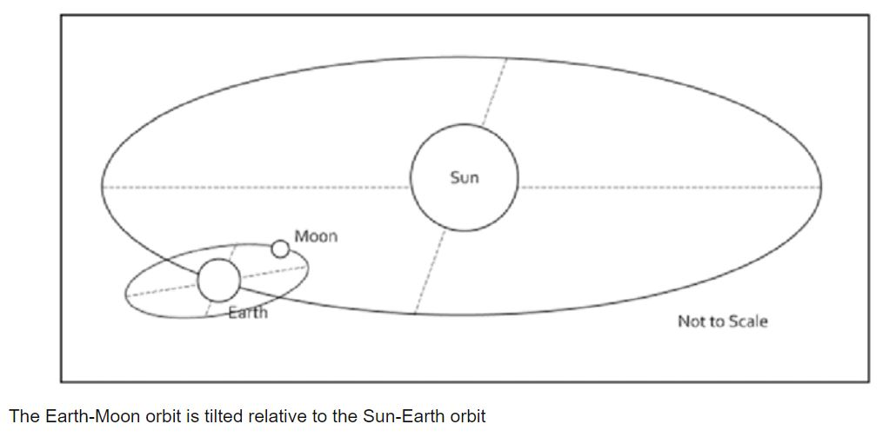
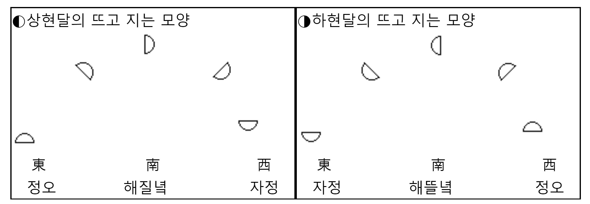

Ref : https://m.blog.naver.com/choiyujung/20255711
그러나 달공전면과 지구 적도면은 약 5도 정도 기울어져 있다고
https://fazz.tistory.com/entry/s39
https://www.researchgate.net/figure/The-Earth-Moon-orbit-is-tilted-relative-to-the-Sun-Earth-orbit_fig1_343792916

Equinox때 북반구에서 관찰한 시간별 상현달의 모양
달공전면과 지구 적도면과 같은 경우
그러나 달공전면과 지구 공전면은 약 5도 정도 기울어져 있다고


다른 자료

위의 시간에 따른 반달 각도 변화의 "경향"은 북반구, 남반구, 절기에 따라 변화 없겠다.
그러나, 위도, 절기에 따라서 반달의 각도가 달라질 수 있겠다.